Exponential integrals and error functions¶
Incomplete gamma functions¶
gammainc()¶
- mpmath.functions.gammainc(z, a=0, b=inf, regularized=False)¶
gammainc(z, a=0, b=inf) computes the (generalized) incomplete gamma function with integration limits
![[a, b]](../_images/math/da2e551d2ca2155b8d8f4935d2e9757722c9bab6.png) :
: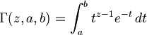
The generalized incomplete gamma function reduces to the following special cases when one or both endpoints are fixed:
- 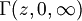 is the standard (“complete”) gamma function, 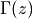 (available directly as the mpmath function gamma())
- 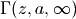 is the “upper” incomplete gamma function, 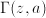
- 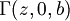 is the “lower” incomplete gamma function, 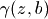.
Of course, we have 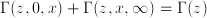 for all
 and
and  .
.Note however that some authors reverse the order of the arguments when defining the lower and upper incomplete gamma function, so one should be careful to get the correct definition.
If also given the keyword argument regularized=True, gammainc() computes the “regularized” incomplete gamma function
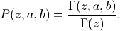
Examples
We can compare with numerical quadrature to verify that gammainc() computes the integral in the definition:
>>> from mpmath import * >>> mp.dps = 25; mp.pretty = True >>> gammainc(2+3j, 4, 10) (0.00977212668627705160602312 - 0.0770637306312989892451977j) >>> quad(lambda t: t**(2+3j-1) * exp(-t), [4, 10]) (0.00977212668627705160602312 - 0.0770637306312989892451977j)
Argument symmetries follow directly from the integral definition:
>>> gammainc(3, 4, 5) + gammainc(3, 5, 4) 0.0 >>> gammainc(3,0,2) + gammainc(3,2,4); gammainc(3,0,4) 1.523793388892911312363331 1.523793388892911312363331 >>> findroot(lambda z: gammainc(2,z,3), 1) 3.0
Evaluation for arbitrarily large arguments:
>>> gammainc(10, 100) 4.083660630910611272288592e-26 >>> gammainc(10, 10000000000000000) 5.290402449901174752972486e-4342944819032375 >>> gammainc(3+4j, 1000000+1000000j) (-1.257913707524362408877881e-434284 + 2.556691003883483531962095e-434284j)
Evaluation of a generalized incomplete gamma function automatically chooses the representation that gives a more accurate result, depending on which parameter is larger:
>>> gammainc(10000000, 3) - gammainc(10000000, 2) # Bad 0.0 >>> gammainc(10000000, 2, 3) # Good 1.755146243738946045873491e+4771204 >>> gammainc(2, 0, 100000001) - gammainc(2, 0, 100000000) # Bad 0.0 >>> gammainc(2, 100000000, 100000001) # Good 4.078258353474186729184421e-43429441
The incomplete gamma functions satisfy simple recurrence relations:
>>> mp.dps = 25 >>> z, a = mpf(3.5), mpf(2) >>> gammainc(z+1, a); z*gammainc(z,a) + a**z*exp(-a) 10.60130296933533459267329 10.60130296933533459267329 >>> gammainc(z+1,0,a); z*gammainc(z,0,a) - a**z*exp(-a) 1.030425427232114336470932 1.030425427232114336470932
Evaluation at integers and poles:
>>> gammainc(-3, -4, -5) (-0.2214577048967798566234192 + 0.0j) >>> gammainc(-3, 0, 5) +inf
If
is an integer, the recurrence reduces the incomplete gamma
function to 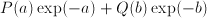 where  and
are polynomials:
and
are polynomials:>>> gammainc(1, 2); exp(-2) 0.1353352832366126918939995 0.1353352832366126918939995 >>> mp.dps = 50 >>> identify(gammainc(6, 1, 2), ['exp(-1)', 'exp(-2)']) '(326*exp(-1) + (-872)*exp(-2))'
The incomplete gamma functions reduce to functions such as the exponential integral Ei and the error function for special arguments:
>>> mp.dps = 25 >>> gammainc(0, 4); -ei(-4) 0.00377935240984890647887486 0.00377935240984890647887486 >>> gammainc(0.5, 0, 2); sqrt(pi)*erf(sqrt(2)) 1.691806732945198336509541 1.691806732945198336509541
Exponential integrals¶
ei()¶
- mpmath.functions.ei(x, **kwargs)¶
Computes the exponential integral or Ei-function, 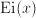. The exponential integral is defined as
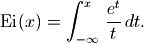
When the integration range includes , the exponential integral is interpreted as providing the Cauchy principal value.
For real
, the Ei-function behaves roughly like
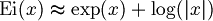.The Ei-function is related to the more general family of exponential integral functions denoted by 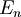, which are available as expint().
Basic examples
Some basic values and limits are:
>>> from mpmath import * >>> mp.dps = 15; mp.pretty = True >>> ei(0) -inf >>> ei(1) 1.89511781635594 >>> ei(inf) +inf >>> ei(-inf) 0.0
For 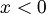, the defining integral can be evaluated numerically as a reference:
>>> ei(-4) -0.00377935240984891 >>> quad(lambda t: exp(t)/t, [-inf, -4]) -0.00377935240984891
ei() supports complex arguments and arbitrary precision evaluation:
>>> mp.dps = 50 >>> ei(pi) 10.928374389331410348638445906907535171566338835056 >>> mp.dps = 25 >>> ei(3+4j) (-4.154091651642689822535359 + 4.294418620024357476985535j)
Related functions
The exponential integral is closely related to the logarithmic integral. See li() for additional information.
The exponential integral is related to the hyperbolic and trigonometric integrals (see chi(), shi(), ci(), si()) similarly to how the ordinary exponential function is related to the hyperbolic and trigonometric functions:
>>> mp.dps = 15 >>> ei(3) 9.93383257062542 >>> chi(3) + shi(3) 9.93383257062542 >>> ci(3j) - j*si(3j) - pi*j/2 (9.93383257062542 + 0.0j)
Beware that logarithmic corrections, as in the last example above, are required to obtain the correct branch in general. For details, see [1].
The exponential integral is also a special case of the hypergeometric function 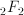:
>>> z = 0.6 >>> z*hyper([1,1],[2,2],z) + (ln(z)-ln(1/z))/2 + euler 0.769881289937359 >>> ei(z) 0.769881289937359
References
- Relations between Ei and other functions: http://functions.wolfram.com/GammaBetaErf/ExpIntegralEi/27/01/
- Abramowitz & Stegun, section 5: http://www.math.sfu.ca/~cbm/aands/page_228.htm
- Asymptotic expansion for Ei: http://mathworld.wolfram.com/En-Function.html
e1()¶
- mpmath.functions.e1(x, **kwargs)¶
Computes the exponential integral 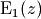, given by
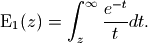
This is equivalent to expint() with
 .
.Examples
Two ways to evaluate this function:
>>> from mpmath import * >>> mp.dps = 25; mp.pretty = True >>> e1(6.25) 0.0002704758872637179088496194 >>> expint(1,6.25) 0.0002704758872637179088496194
The E1-function is essentially the same as the Ei-function (ei()) with negated argument, except for an imaginary branch cut term:
>>> e1(2.5) 0.02491491787026973549562801 >>> -ei(-2.5) 0.02491491787026973549562801 >>> e1(-2.5) (-7.073765894578600711923552 - 3.141592653589793238462643j) >>> -ei(2.5) -7.073765894578600711923552
expint()¶
- mpmath.functions.expint(*args)¶
expint(n,z)() gives the generalized exponential integral or En-function,
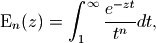
where
 and may both be complex numbers. The case with is
also given by e1().
and may both be complex numbers. The case with is
also given by e1().Examples
Evaluation at real and complex arguments:
>>> from mpmath import * >>> mp.dps = 25; mp.pretty = True >>> expint(1, 6.25) 0.0002704758872637179088496194 >>> expint(-3, 2+3j) (0.00299658467335472929656159 + 0.06100816202125885450319632j) >>> expint(2+3j, 4-5j) (0.001803529474663565056945248 - 0.002235061547756185403349091j)
At negative integer values of
, 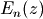 reduces to a
rational-exponential function:>>> f = lambda n, z: fac(n)*sum(z**k/fac(k-1) for k in range(1,n+2))/\ ... exp(z)/z**(n+2) >>> n = 3 >>> z = 1/pi >>> expint(-n,z) 584.2604820613019908668219 >>> f(n,z) 584.2604820613019908668219 >>> n = 5 >>> expint(-n,z) 115366.5762594725451811138 >>> f(n,z) 115366.5762594725451811138
Logarithmic integral¶
li()¶
- mpmath.functions.li(x, **kwargs)¶
Computes the logarithmic integral or li-function 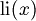, defined by
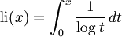
The logarithmic integral has a singularity at
 .
.Note that there is a second logarithmic integral, the Li function, defined by
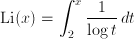
This “offset logarithmic integral” can be computed via li() using the simple identity 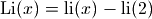.
The logarithmic integral should also not be confused with the polylogarithm (also denoted by Li), which is implemented as polylog().
Examples
Some basic values and limits:
>>> from mpmath import * >>> mp.dps = 30; mp.pretty = True >>> li(0) 0.0 >>> li(1) -inf >>> li(1) -inf >>> li(2) 1.04516378011749278484458888919 >>> findroot(li, 2) 1.45136923488338105028396848589 >>> li(inf) +inf
The logarithmic integral can be evaluated for arbitrary complex arguments:
>>> mp.dps = 20 >>> li(3+4j) (3.1343755504645775265 + 2.6769247817778742392j)
The logarithmic integral is related to the exponential integral:
>>> ei(log(3)) 2.1635885946671919729 >>> li(3) 2.1635885946671919729
The logarithmic integral grows like 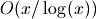:
>>> mp.dps = 15 >>> x = 10**100 >>> x/log(x) 4.34294481903252e+97 >>> li(x) 4.3619719871407e+97
The prime number theorem states that the number of primes less than
is asymptotic to . For example,
it is known that there are exactly 1,925,320,391,606,803,968,923
prime numbers less than 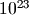 [1]. The logarithmic integral
provides a very accurate estimate:>>> li(2) + li(10**23) 1.92532039161405e+21
A definite integral is:
>>> quad(li, [0, 1]) -0.693147180559945 >>> -ln(2) -0.693147180559945
References
Trigonometric integrals¶
ci()¶
- mpmath.functions.ci(x, **kwargs)¶
Computes the cosine integral,
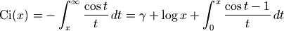
Examples
Some values and limits:
>>> from mpmath import * >>> mp.dps = 25; mp.pretty = True >>> ci(0) -inf >>> ci(1) 0.3374039229009681346626462 >>> ci(pi) 0.07366791204642548599010096 >>> ci(inf) 0.0 >>> ci(-inf) (0.0 + 3.141592653589793238462643j) >>> ci(2+3j) (1.408292501520849518759125 - 2.983617742029605093121118j)
The cosine integral behaves roughly like the sinc function (see sinc()) for large real
:>>> ci(10**10) -4.875060251748226537857298e-11 >>> sinc(10**10) -4.875060250875106915277943e-11 >>> chop(limit(ci, inf)) 0.0
It has infinitely many roots on the positive real axis:
>>> findroot(ci, 1) 0.6165054856207162337971104 >>> findroot(ci, 2) 3.384180422551186426397851
We can evaluate the defining integral as a reference:
>>> mp.dps = 15 >>> -quadosc(lambda t: cos(t)/t, [5, inf], omega=1) -0.190029749656644 >>> ci(5) -0.190029749656644
Some infinite series can be evaluated using the cosine integral:
>>> nsum(lambda k: (-1)**k/(fac(2*k)*(2*k)), [1,inf]) -0.239811742000565 >>> ci(1) - euler -0.239811742000565
si()¶
- mpmath.functions.si(x, **kwargs)¶
Computes the sine integral,
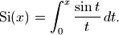
The sine integral is thus the antiderivative of the sinc function (see sinc()).
Examples
Some values and limits:
>>> from mpmath import * >>> mp.dps = 25; mp.pretty = True >>> si(0) 0.0 >>> si(1) 0.9460830703671830149413533 >>> si(-1) -0.9460830703671830149413533 >>> si(pi) 1.851937051982466170361053 >>> si(inf) 1.570796326794896619231322 >>> si(-inf) -1.570796326794896619231322 >>> si(2+3j) (4.547513889562289219853204 + 1.399196580646054789459839j)
The sine integral approaches 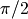 for large real
:>>> si(10**10) 1.570796326707584656968511 >>> pi/2 1.570796326794896619231322
We can evaluate the defining integral as a reference:
>>> mp.dps = 15 >>> quad(sinc, [0, 5]) 1.54993124494467 >>> si(5) 1.54993124494467
Some infinite series can be evaluated using the sine integral:
>>> nsum(lambda k: (-1)**k/(fac(2*k+1)*(2*k+1)), [0,inf]) 0.946083070367183 >>> si(1) 0.946083070367183
Hyperbolic integrals¶
chi()¶
- mpmath.functions.chi(x, **kwargs)¶
Computes the hyperbolic cosine integral, defined in analogy with the cosine integral (see ci()) as
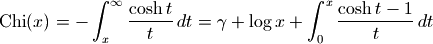
Some values and limits:
>>> from mpmath import * >>> mp.dps = 25; mp.pretty = True >>> chi(0) -inf >>> chi(1) 0.8378669409802082408946786 >>> chi(inf) +inf >>> findroot(chi, 0.5) 0.5238225713898644064509583 >>> chi(2+3j) (-0.1683628683277204662429321 + 2.625115880451325002151688j)
shi()¶
- mpmath.functions.shi(x, **kwargs)¶
Computes the hyperbolic sine integral, defined in analogy with the sine integral (see si()) as
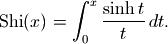
Some values and limits:
>>> from mpmath import * >>> mp.dps = 25; mp.pretty = True >>> shi(0) 0.0 >>> shi(1) 1.057250875375728514571842 >>> shi(-1) -1.057250875375728514571842 >>> shi(inf) +inf >>> shi(2+3j) (-0.1931890762719198291678095 + 2.645432555362369624818525j)
Error functions¶
erf()¶
- mpmath.functions.erf(x, **kwargs)¶
Computes the error function, 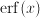. The error function is the normalized antiderivative of the Gaussian function 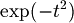. More precisely,
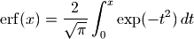
Basic examples
Simple values and limits include:
>>> from mpmath import * >>> mp.dps = 15; mp.pretty = True >>> erf(0) 0.0 >>> erf(1) 0.842700792949715 >>> erf(-1) -0.842700792949715 >>> erf(inf) 1.0 >>> erf(-inf) -1.0
For large real
, approaches 1 very
rapidly:>>> erf(3) 0.999977909503001 >>> erf(5) 0.999999999998463
The error function is an odd function:
>>> nprint(chop(taylor(erf, 0, 5))) [0.0, 1.12838, 0.0, -0.376126, 0.0, 0.112838]
erf() implements arbitrary-precision evaluation and supports complex numbers:
>>> mp.dps = 50 >>> erf(0.5) 0.52049987781304653768274665389196452873645157575796 >>> mp.dps = 25 >>> erf(1+j) (1.316151281697947644880271 + 0.1904534692378346862841089j)
Evaluation is supported for large arguments:
>>> mp.dps = 25 >>> erf('1e1000') 1.0 >>> erf('-1e1000') -1.0 >>> erf('1e-1000') 1.128379167095512573896159e-1000 >>> erf('1e7j') (0.0 + 8.593897639029319267398803e+43429448190317j) >>> erf('1e7+1e7j') (0.9999999858172446172631323 + 3.728805278735270407053139e-8j)
Related functions
See also erfc(), which is more accurate for large
,
and erfi() which gives the antiderivative of
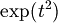.The Fresnel integrals fresnels() and fresnelc() are also related to the error function.
erfc()¶
- mpmath.functions.erfc(x, **kwargs)¶
Computes the complementary error function, 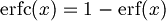. This function avoids cancellation that occurs when naively computing the complementary error function as 1-erf(x):
>>> from mpmath import * >>> mp.dps = 15; mp.pretty = True >>> 1 - erf(10) 0.0 >>> erfc(10) 2.08848758376254e-45
erfc() works accurately even for ludicrously large arguments:
>>> erfc(10**10) 4.3504398860243e-43429448190325182776
Complex arguments are supported:
>>> erfc(500+50j) (1.19739830969552e-107492 + 1.46072418957528e-107491j)
erfi()¶
- mpmath.functions.erfi(x)¶
Computes the imaginary error function, 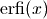. The imaginary error function is defined in analogy with the error function, but with a positive sign in the integrand:
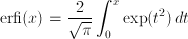
Whereas the error function rapidly converges to 1 as
grows,
the imaginary error function rapidly diverges to infinity.
The functions are related as
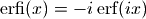 for all complex
numbers .Examples
Basic values and limits:
>>> from mpmath import * >>> mp.dps = 15; mp.pretty = True >>> erfi(0) 0.0 >>> erfi(1) 1.65042575879754 >>> erfi(-1) -1.65042575879754 >>> erfi(inf) +inf >>> erfi(-inf) -inf
Note the symmetry between erf and erfi:
>>> erfi(3j) (0.0 + 0.999977909503001j) >>> erf(3) 0.999977909503001 >>> erf(1+2j) (-0.536643565778565 - 5.04914370344703j) >>> erfi(2+1j) (-5.04914370344703 - 0.536643565778565j)
Large arguments are supported:
>>> erfi(1000) 1.71130938718796e+434291 >>> erfi(10**10) 7.3167287567024e+43429448190325182754 >>> erfi(-10**10) -7.3167287567024e+43429448190325182754 >>> erfi(1000-500j) (2.49895233563961e+325717 + 2.6846779342253e+325717j) >>> erfi(100000j) (0.0 + 1.0j) >>> erfi(-100000j) (0.0 - 1.0j)
erfinv()¶
- mpmath.functions.erfinv(x)¶
Computes the inverse error function, satisfying
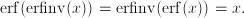
This function is defined only for 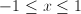.
Examples
Special values include:
>>> from mpmath import * >>> mp.dps = 15; mp.pretty = True >>> erfinv(0) 0.0 >>> erfinv(1) +inf >>> erfinv(-1) -inf
The domain is limited to the standard interval:
>>> erfinv(2) Traceback (most recent call last): ... ValueError: erfinv(x) is defined only for -1 <= x <= 1
It is simple to check that erfinv() computes inverse values of erf() as promised:
>>> erf(erfinv(0.75)) 0.75 >>> erf(erfinv(-0.995)) -0.995
erfinv() supports arbitrary-precision evaluation:
>>> mp.dps = 50 >>> x = erf(2) >>> x 0.99532226501895273416206925636725292861089179704006 >>> erfinv(x) 2.0
A definite integral involving the inverse error function:
>>> mp.dps = 15 >>> quad(erfinv, [0, 1]) 0.564189583547756 >>> 1/sqrt(pi) 0.564189583547756
The inverse error function can be used to generate random numbers with a Gaussian distribution (although this is a relatively inefficient algorithm):
>>> nprint([erfinv(2*rand()-1) for n in range(6)]) # doctest: +SKIP [-0.586747, 1.10233, -0.376796, 0.926037, -0.708142, -0.732012]
The normal distribution¶
npdf()¶
- mpmath.functions.npdf(x, mu=0, sigma=1)¶
npdf(x, mu=0, sigma=1) evaluates the probability density function of a normal distribution with mean value 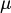 and variance 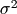.
Elementary properties of the probability distribution can be verified using numerical integration:
>>> from mpmath import * >>> mp.dps = 15; mp.pretty = True >>> quad(npdf, [-inf, inf]) 1.0 >>> quad(lambda x: npdf(x, 3), [3, inf]) 0.5 >>> quad(lambda x: npdf(x, 3, 2), [3, inf]) 0.5
See also ncdf(), which gives the cumulative distribution.
ncdf()¶
- mpmath.functions.ncdf(x, mu=0, sigma=1)¶
ncdf(x, mu=0, sigma=1) evaluates the cumulative distribution function of a normal distribution with mean value and variance .
See also npdf(), which gives the probability density.
Elementary properties include:
>>> from mpmath import * >>> mp.dps = 15; mp.pretty = True >>> ncdf(pi, mu=pi) 0.5 >>> ncdf(-inf) 0.0 >>> ncdf(+inf) 1.0
The cumulative distribution is the integral of the density function having identical mu and sigma:
>>> mp.dps = 15 >>> diff(ncdf, 2) 0.053990966513188 >>> npdf(2) 0.053990966513188 >>> diff(lambda x: ncdf(x, 1, 0.5), 0) 0.107981933026376 >>> npdf(0, 1, 0.5) 0.107981933026376
Fresnel integrals¶
fresnels()¶
- mpmath.functions.fresnels(x)¶
Computes the Fresnel sine integral
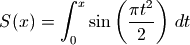
Note that some sources define this function without the normalization factor .
Examples
Some basic values and limits:
>>> from mpmath import * >>> mp.dps = 25; mp.pretty = True >>> fresnels(0) 0.0 >>> fresnels(inf) 0.5 >>> fresnels(-inf) -0.5 >>> fresnels(1) 0.4382591473903547660767567 >>> fresnels(1+2j) (36.72546488399143842838788 + 15.58775110440458732748279j)
Comparing with the definition:
>>> fresnels(3) 0.4963129989673750360976123 >>> quad(lambda t: sin(pi*t**2/2), [0,3]) 0.4963129989673750360976123
fresnelc()¶
- mpmath.functions.fresnelc(x)¶
Computes the Fresnel cosine integral
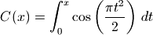
Note that some sources define this function without the normalization factor .
Examples
Some basic values and limits:
>>> from mpmath import * >>> mp.dps = 25; mp.pretty = True >>> fresnelc(0) 0.0 >>> fresnelc(inf) 0.5 >>> fresnelc(-inf) -0.5 >>> fresnelc(1) 0.7798934003768228294742064 >>> fresnelc(1+2j) (16.08787137412548041729489 - 36.22568799288165021578758j)
Comparing with the definition:
>>> fresnelc(3) 0.6057207892976856295561611 >>> quad(lambda t: cos(pi*t**2/2), [0,3]) 0.6057207892976856295561611